I'm a Content Designer specialized in UX Writing. I combine words, research and design to create clear, user-centered experiences. At Miravia and SEAT, I've improved user journeys through content and usability insights.
Content design for a football-themed minigame across game flow, campaign banners and push/CRM notifications in three languages, driving €125.6K in campaign GMV.
Content audit and AI agent built to correct and optimize a chatbot's questions and answers at scale, raising its satisfaction rate by more than 10 percentage points.
Banners, imagery and content for an editorial-style trends section on web and app, plus the creation and management of AI-generated content for the TikTok account to bring users into it.
A data-driven carpooling app built from scratch for the university community, leveraging deep UX Research and integrating strategic microcopy to design a safe, sustainable and trust-based solution.
UX ResearchUX WritingBuilt a Design System from scratch
Strategic and heuristic-driven redesign of an online clothing store, focused on optimizing the user journey for better conversion and a seamless shopping experience.
User testingHeuristic analysisRedesigned the website
I'm a Content Designer with a background in UX and Translation & Interpreting, specialized in creating clear, user-centered content and improving digital product experiences.
Over the past few years, I've worked on digital products for companies such as Google, Apple, SEAT and Miravia, creating and localizing content in Spanish and Catalan. My experience in localization and terminology management has given me a strong eye for consistency, clarity and detail, as well as solid analytical and linguistic skills.
As a Content Designer, I collaborate closely with product designers, product owners and developers to improve user flows and shape the content across digital interfaces. I've worked on microcopy, user journeys, usability testing, content guidelines and AI-powered content workflows, always considering the user, the product context and the overall experience.
I particularly enjoy finding the right words to make digital experiences clearer and more intuitive, while combining content, design and user insights to solve real product problems.
In response to the current rail crisis in Spain, and seeing so many young people struggling to get to university on time, I decided to design an app for students at the Autonomous University of Barcelona who live in my city and have to commute daily. The goal was to create an app that would allow students to carpool to and from university.
As the UX/UI Designer & UX Writer, my role combined strategy, research, product and content design.
2. Design process
3. Research
I began by conducting a competitive analysis and developing several hypotheses. To validate them, I carried out a survey to obtain quantitative data, such as the percentage of students dissatisfied with the train service or the percentage of students who have a driver's license and their own vehicle. I also interviewed five students to gather qualitative data, such as the frustration, fear, and insecurity they feel about the current situation. The insights gathered allowed me to validate my hypotheses and deeply understand the needs and pain points of the student community.
I also did some benchmarking to detect opportunities and get inspired.
Find below a few examples of the questions asked in the survey. As you can see, 90.5% of students think that the train service (Rodalies) is deficient and 100% of them would always use a car to go to university.
How would you define the service of Rodalies (R4)?
Deficient90.5%
Regular9.5%
Good0%
Excellent0%
Are you tired of relying on public transport to get to and from university?
Yes85.7%
No14.3%
Do you own a car?
Yes10.5%
No47.4%
Sometimes42.1%
If you could, would you always go to and from university by car?
Yes100%
No0%
I don't know0%
4. Ideation
After collecting and analyzing the data, the ideation and definition process began. At this point, I created the user persona using the data obtained and I also considered different scenarios for an MVP (How Might We). I brainstormed, noted, and defined several ideas, and analyzed them to verify their feasibility. Then I created a journey map, which helped me uncover pain points and opportunities.
Once I had defined the value proposition, I began to design the different user flows needed to create the MVP.
Some of the pain points detected were:
Frustration at not finding alternatives to public transport.
Scheduling conflicts among existing social circles prevent students from carpooling with friends.
Lack of security when carpooling with unknown people.
These pain points became opportunities:
Invest in advertising to convey trustworthiness.
Conduct surveys to registered users to find out what they need.
Require all profiles to be verified and to have a profile picture, phone number, and a description to increase confidence.
Offer discounts for posting reviews.
Satisfaction survey after each trip in order to rate users and increase security.
Alba Riera was the user persona created to empathize with the actual problem.
Alba Riera
20 years old
UAB student
Manresa
Bio
Alba is 20 years old and a second-year Translation and Interpreting student at the Autonomous University of Barcelona (UAB). She lives with her parents and younger sister in an apartment in the old town of Manresa. Although she has had her driver's license for a year, she doesn't have her own car to use whenever she needs it, as the cars at home belong to her parents. In addition to her university studies, she has a part-time job as a waitress that allows her to earn money for her expenses. She loves to travel, watch series on Netflix, and spend time with her friends.
Interests
Arriving on time to university classes.
Meet people who make the same journeys every day/week.
Expectations
Not wasting so much time on public transport.
Stop being anxious about not knowing if the train will come or not.
Goals
Go to university by car.
Freedom of movement.
Frustrations
Not having an own vehicle to use whenever she wants.
5. Mid-fidelity wireframing
After collecting all the data and defining the user persona, it was time to design the expected user flows for an MVP. To do so, I had to define the architecture of information.
I mapped out 7 core user flows, focusing on the most critical journeys:
Onboarding
Registration
Offering a trip
Searching for a trip
Main view of the "Trips" section
Main view of the "Messages" section
Main view of the "Profile" section
Given the complexity of these flows, I prioritized a clear information architecture to reduce the user's cognitive load. Below, you can explore the refined logic of the "Offering a trip" and "Searching for a trip" flows:
Once I had the minimum user flows defined for an MVP, it was the turn to start designing mid-fidelity wireframes. At this point, it was crucial to start defining a tone and style, as well as deciding the name of each section in the tab bar.
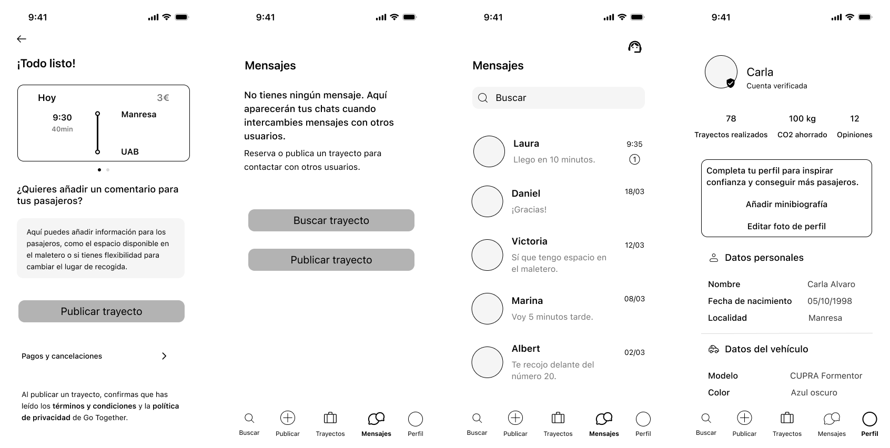
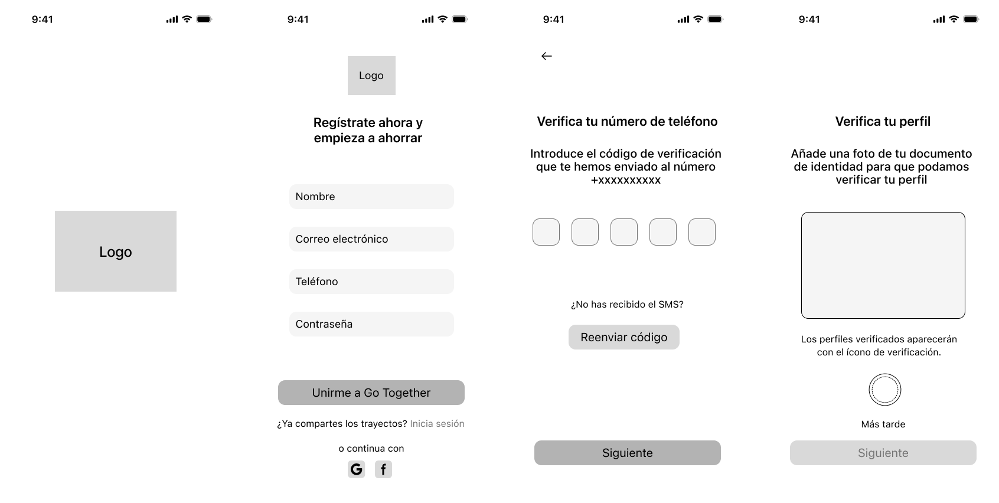
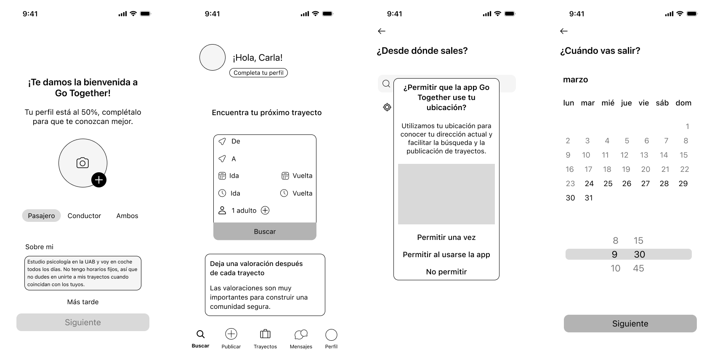
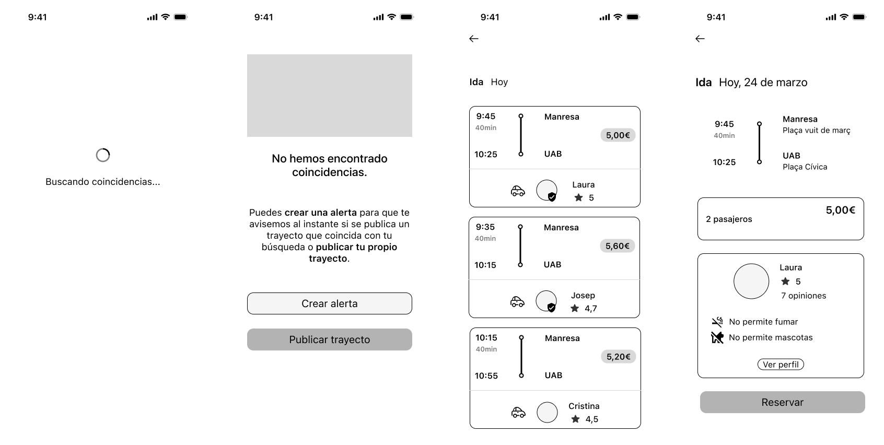
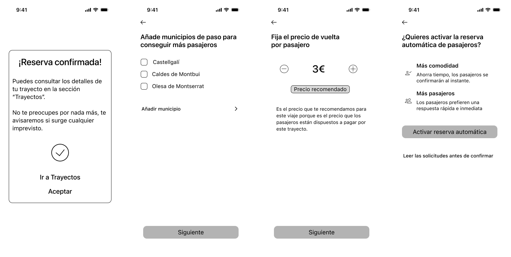
6. UX Writing
Strategic content design was a fundamental challenge in aligning the interface with the university-based target audience. My goal was to establish a voice and tone that felt close, empathetic, and reliable.
The most critical task was the onboarding flow, where I had to condense the value proposition and core objectives into just three screens to avoid user saturation.
Screen 1: I decided to lead with the phrase "Olvídate de los transbordos" (Forget about transfers in English), directly addressing the primary pain point discovered in my survey: deep dissatisfaction with the current train service.
Screen 2: This screen focuses on building a safe community. Since trust was identified as a major barrier during the journey mapping process, the copy emphasizes verified profiles to reduce user anxiety.
Screen 3: Here I highlighted the dual benefits of sustainability and savings, two of the project's main pillars.
Finally, to trigger a positive visceral response and convey movement, I chose the copy "¡Vámonos!" (Let's go! in English) as the primary CTA. This choice replaces generic navigation with a more dynamic and engaging invitation to join the community.
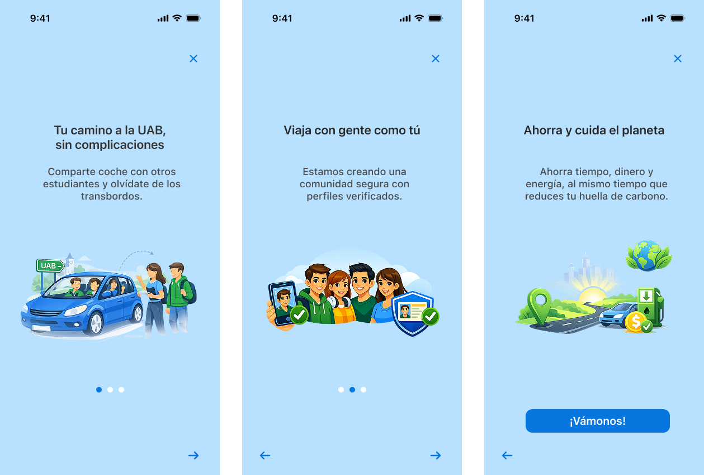
For the sign-up screen, I designed a heading focused on the platform's primary economic advantage: savings. I selected the copy "Regístrate ahora y empieza a ahorrar" (Register now and start saving in English) to immediately communicate the core value proposition to the student, encouraging conversion through a clear personal benefit.
One of the most nuanced decisions was selecting the right term for the women-only trip feature. My goal was to provide a safe space while maintaining an inclusive tone that resonated with the diverse university community:
"Mujeres" (Women) was discarded for being too formal and distant for the core 18–28 age demographic.
"Chicas" (Girls) was avoided to prevent a tone that could be perceived as infantilizing or exclusionary for mature students.
"Estudiantes" (Students) lacked the necessary gender specificity in Spanish to clearly define a female-only environment, as the word is spelled the same for both masculine and feminine.
Finally, I ultimately selected the term "compañeras" (female peers or classmates) because it successfully bridges the age gap between younger and older students while reinforcing a sense of community and safety.
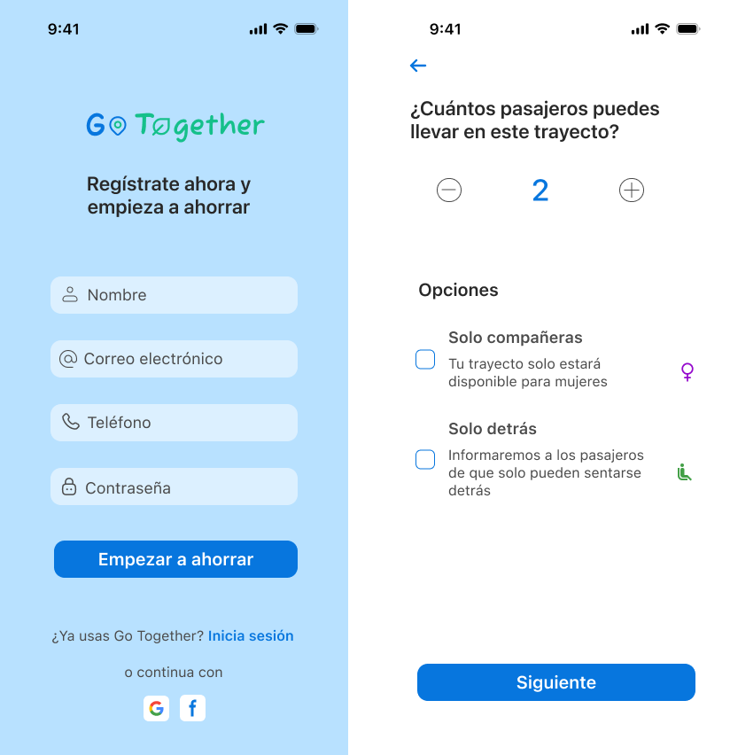
Another critical UX Writing decision involved selecting the most effective terminology for the daily commute. While "viajes" (trips) is common in carpooling, my research revealed it often evokes leisure or vacation vibes, which contradicted the practical, routine nature of the Go Together service. I chose "trayecto" (journey) as a more professional and accurate alternative. Despite concerns regarding visual hierarchy and screen real estate due to the word's length, user validation confirmed that "trayecto" was the most resonant term. This decision aligns with the app's mission to connect students through efficient, shared daily routes.
7. Design system
After validating the mid-fidelity wireframes, the next step was starting to build a design system from scratch. Here you can see some elements from the final Style Guide and Components library.
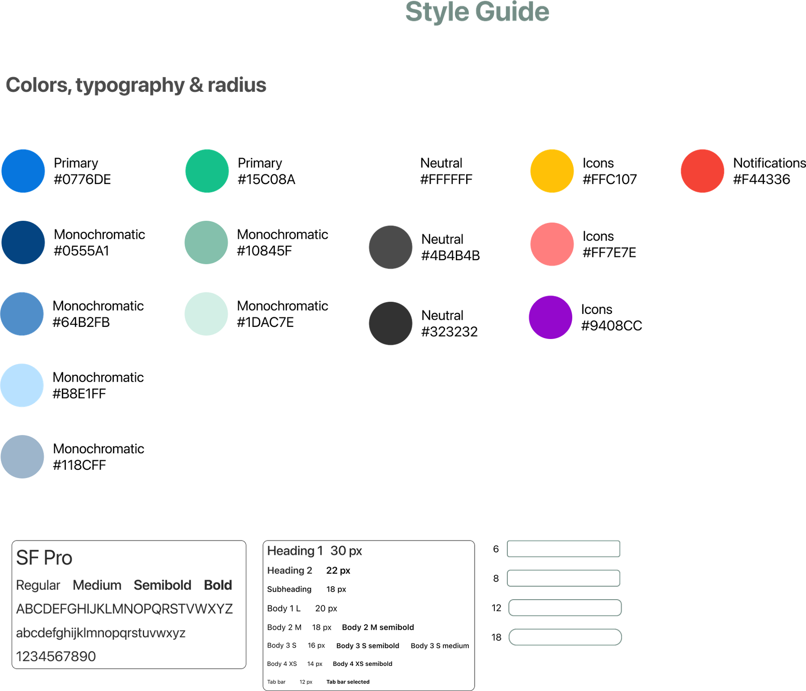
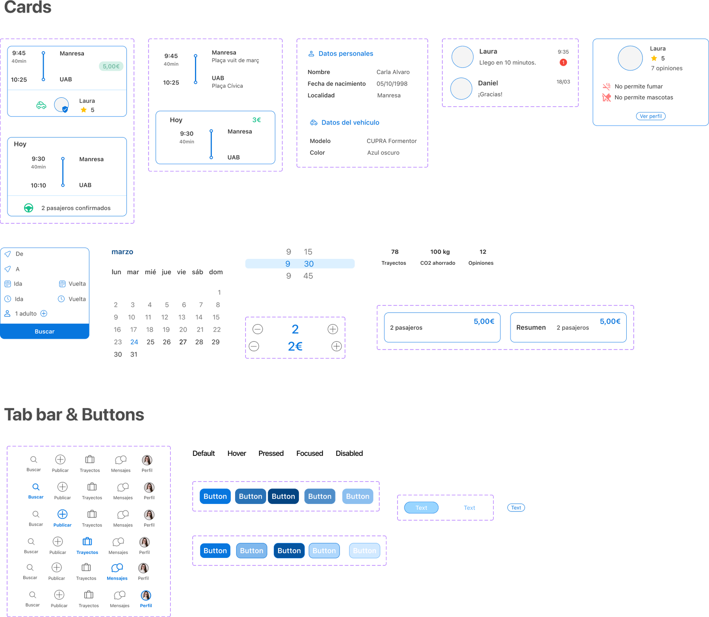
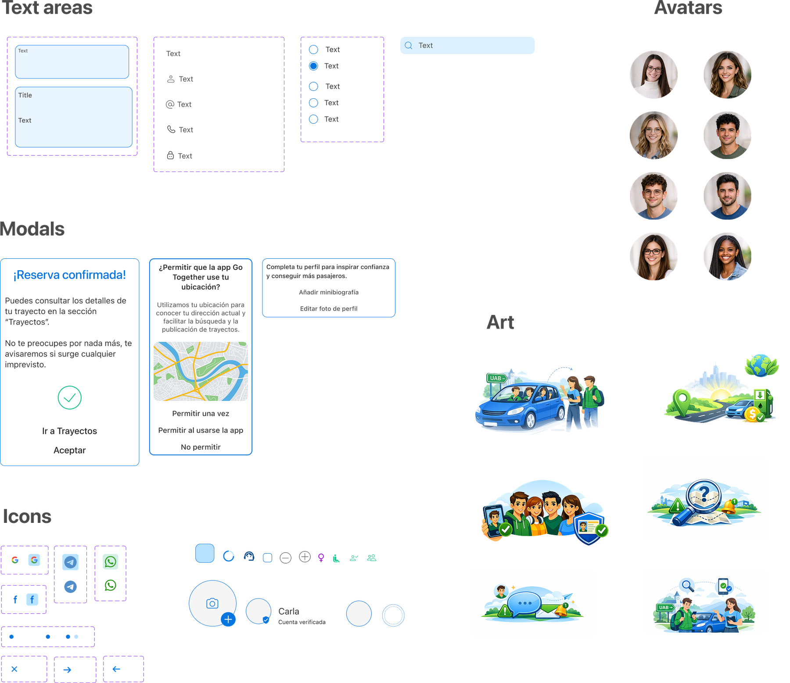
8. High-fidelity wireframing
Here you can see some high-fidelity screens ready to be developed. I used the plugin Able to make sure that colors meet the contrast ratios for the app to be inclusive.
Creating a digital product isn't just about building features: it's about building trust, consistency, and shared understanding.
Go Together taught me how important it is to make the effort of setting the foundations and make sure the product is cohesive, while making design stand out for collaboration and growth.
I want to continue working on this project so that one day it becomes a real developed app. Future iterations will focus on integrating a rating system and refining the booking flow based on real-world usability testing. Stay tuned if you are interested 🙂
Zebra&Maduixa is a successful local boutique that expanded into e-commerce to reach a wider audience. Despite the physical store's popularity, their online performance was underperforming. To identify the barriers to conversion, I conducted moderated usability tests and a heuristic evaluation. My research revealed that 65% of users felt confused during the checkout process, and 45% struggled with the navigation menu. This project focused on redesigning the homepage and information architecture to build trust and simplify the shopping journey.
2. Heuristic evaluation findings
The following section outlines the key usability issues identified through a heuristic evaluation based on Jakob Nielsen's 10 principles. To effectively prioritize the redesign, each issue has been categorized using a severity scale, focusing on high-impact solutions that improve the overall user experience.
1
Cosmetic problem: no need to be fixed unless extra time is available.
2
Minor usability problem: fixing this should be given low priority.
3
Major usability problem: important to fix, high priority.
4
Usability catastrophe: imperative to fix this.
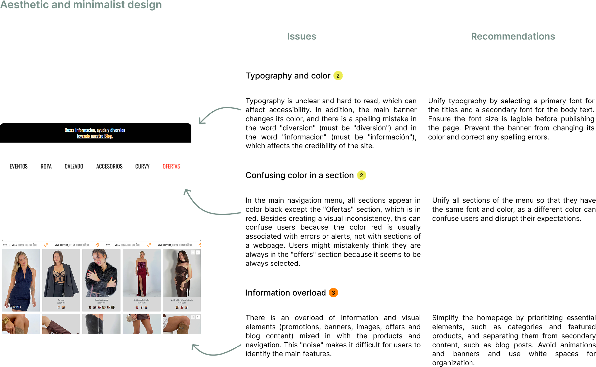
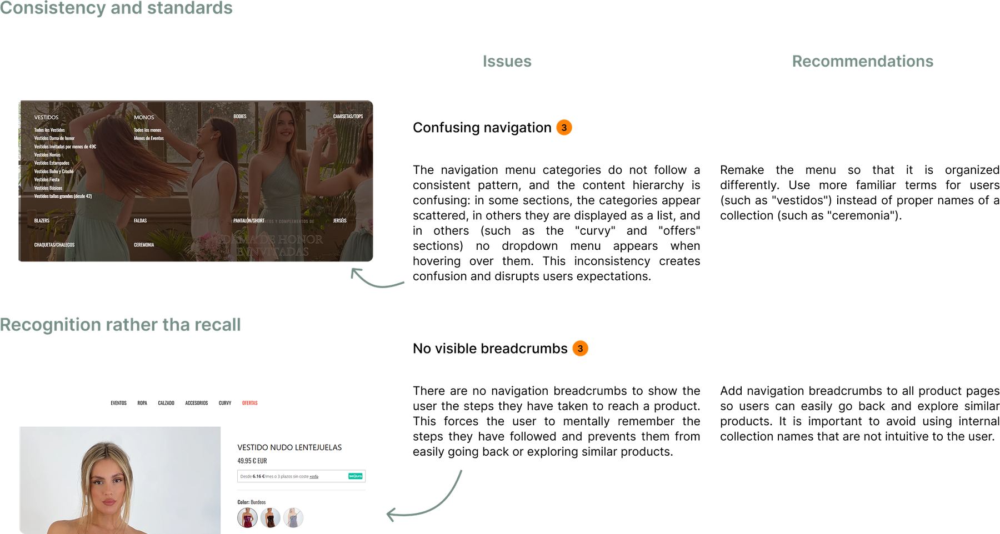
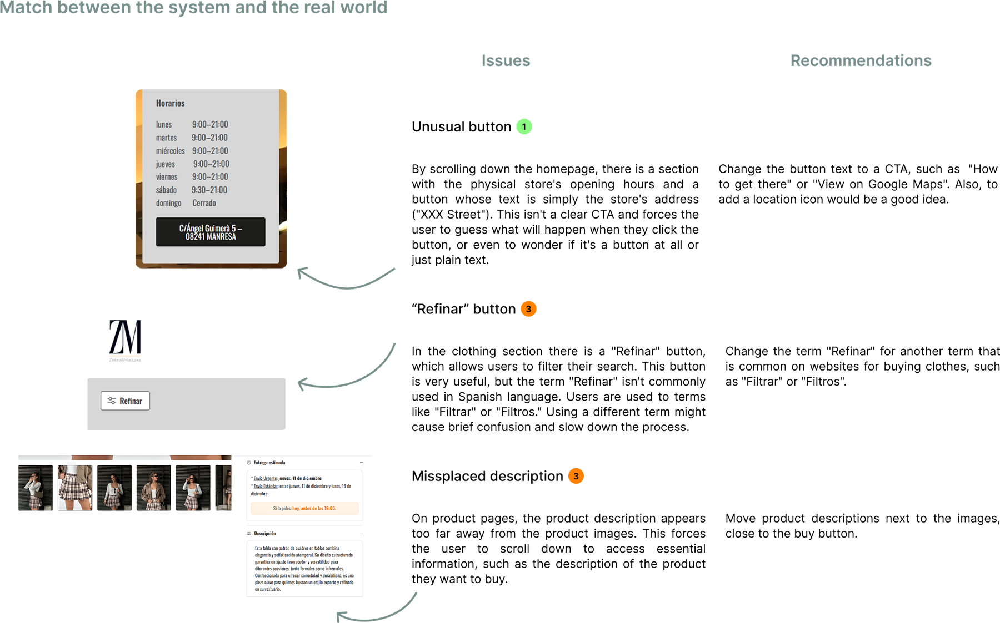
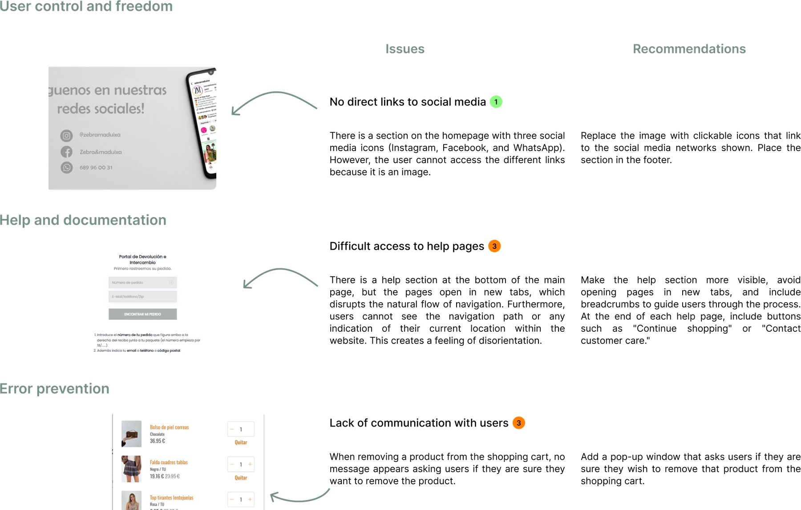
3. User research and analysis
To build a data-driven design, I conducted a deep user research to identify the main friction points and usability barriers of the current website. My goal was to understand the users' needs and motivations to ensure a more efficient and satisfactory shopping experience.
Moderated usability testing: I carried out moderated usability tests with real users to observe their behavior in a controlled environment. I asked them to perform tasks on the webpage, such as buying clothes, finding a concrete section or looking for help pages. I observed them without giving them any hints, and the findings were critical: 65% of users felt confused during the checkout process, and 45% struggled to understand the items in the navigation menu. These results validated my hypothesis that the existing information architecture was a major barrier to conversion.
Card sorting for information architecture: To address the navigation issues, I implemented the card sorting technique. This allowed me to map the users' mental models and find patterns in how they naturally categorize clothing. As a result, I redefined the menu by replacing internal collection names with familiar, user-friendly terms (e.g., changing "ceremonia" to "vestidos"), ensuring an intuitive and "invisible" navigation.
Competitive benchmarking: I performed a benchmarking analysis of several leading websites in the fashion sector, such as Inditex websites for shops like Bershka, Pull&Bear and Stradivarius. By studying the competition, I identified industry best practices and strategic opportunities to improve the brand's digital presence. This research was essential to ensure that the redesign followed established consistency and standards, making the platform feel both modern and reliable for the customer.
4. Mid-fidelity wireframing
Following the research and analysis phase, I transitioned to the mid-fidelity wireframing process. The primary objective was to translate the insights gathered into a structural "skeleton" that defines the content and functionality of the interface. During this stage, I focused on the strategic positioning of key interactive elements — such as the search bar, tab bar, and navigation menu — to establish a clear visual hierarchy and reduce the user's cognitive load.
This phase was instrumental in applying the information architecture defined through my card sorting sessions, ensuring that the navigation is intuitive and aligns with the users' mental models. By working in black and white, I prioritized usability and layout over aesthetics, allowing for early iteration and efficient problem-solving before moving to the high-fidelity design phase.
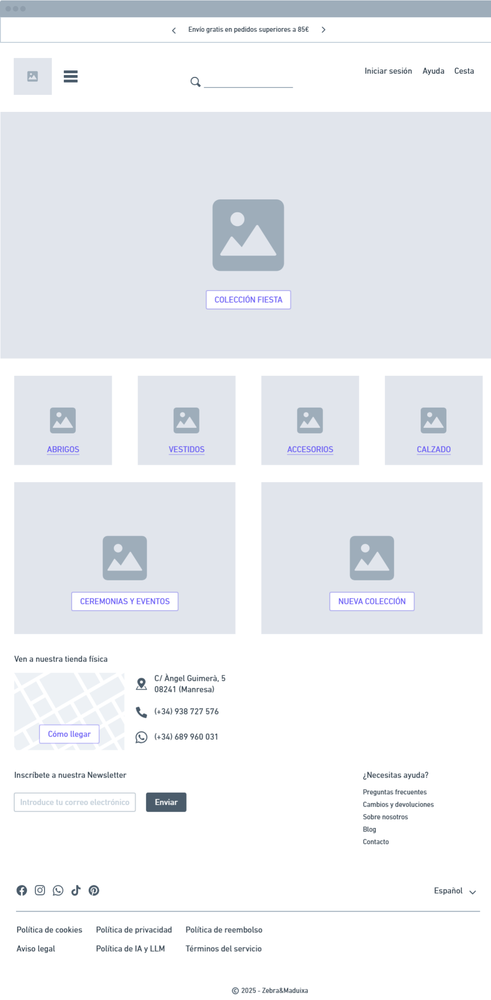
5. Strategic redesign and key improvements
Transforming usability barriers into high-impact solutions. This comparison highlights strategic improvements in navigation, user control, and verbal usability, ensuring the interface is not only functional but also communicates the brand's sophisticated identity.
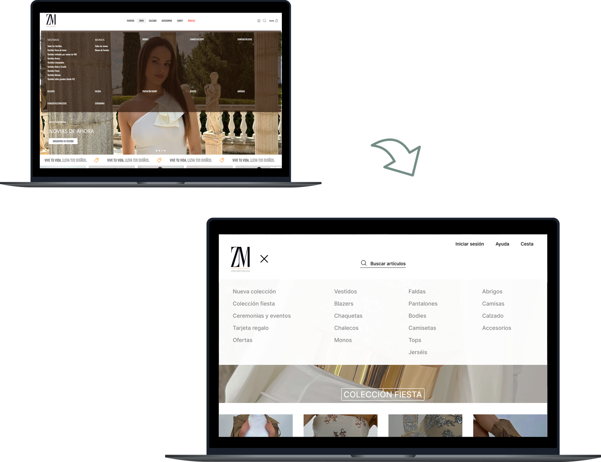
Optimized the information architecture by replacing internal collection names (e.g., "ceremonia") with user-centered terminology (e.g., "vestidos"). This alignment with users' mental models reduces cognitive load and ensures a more intuitive navigation experience.
Enhanced the findability of the "Help" section ("Ayuda") by integrating it into the primary navigation bar. This strategic placement ensures instant access to support, minimizing user friction during the shopping journey.
Repositioned the search bar to a central, high-visibility area to improve accessibility and efficiency. Following Fitts's Law, this change facilitates rapid product discovery, making the search function a primary tool for the user.
Elevated the visual identity with a sophisticated color palette and refined typography. This new aesthetic not only reflects the brand's positioning in the elegant event wear market but also reinforces user trust through a cohesive and professional interface.
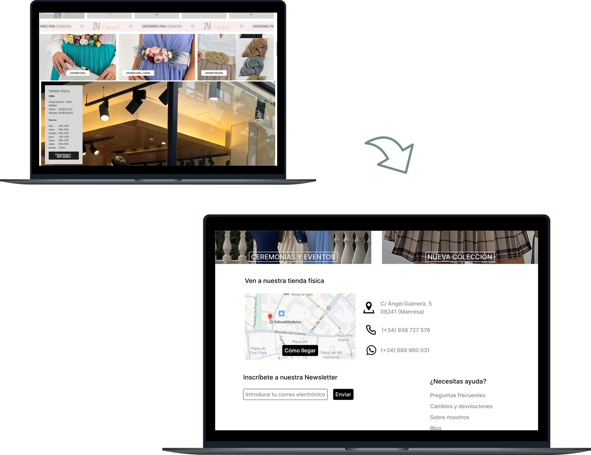
Transformed the cluttered homepage — originally overwhelmed by excessive banners and information — into a minimalist design. By applying the KISS principle, I prioritized essential elements like categories and featured products, significantly reducing the user's cognitive load.
Replaced the static physical address ("placeholder address") with a clear, action-oriented CTA ("Cómo llegar"). This improvement enhances verbal usability, making the interaction more intuitive and efficient for users intending to visit the store.
Integrated a dedicated "Help" section before the footer to improve the findability of FAQs and essential site information. This strategic placement ensures that support is always accessible, enhancing overall user satisfaction and trust.
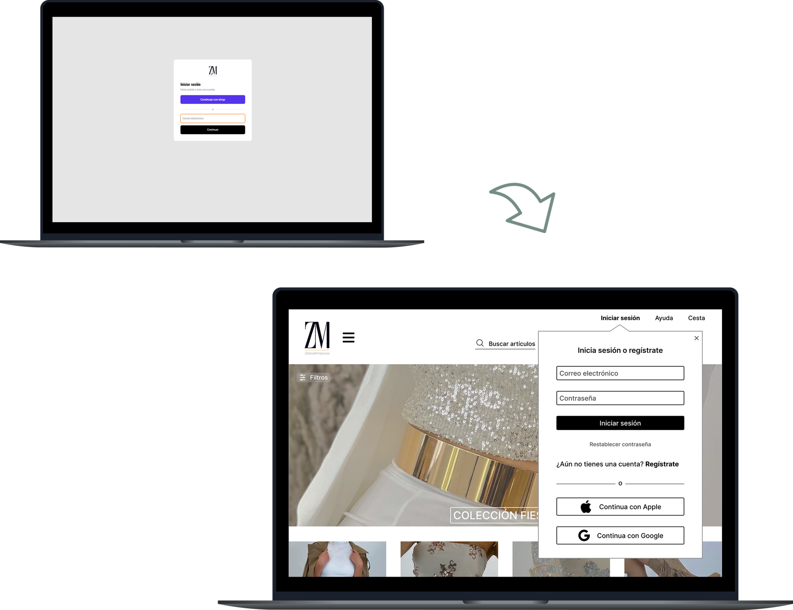
The original "Log in" button redirected users to a new tab, causing a significant disruption in the interaction flow. To preserve user control and freedom, I replaced this with a pop-up overlay. This allows users to authenticate without losing their context on the site, effectively reducing cognitive load. Additionally, I integrated multiple sign-in options to simplify the process and enhance efficiency.
I improved the site's verbal usability by replacing the non-standard term "Refinar" with "Filtrar" (Filter). This change adheres to the heuristic of consistency and standards, aligning the interface with the users' mental models and established e-commerce conventions.
6. High-fidelity wireframing
In the final stage of the project, I transitioned to high-fidelity wireframing to bring the interface to life by incorporating color, imagery, and definitive design elements. These high-fidelity screens represent the final balance between form and function. Every visual choice, from the hierarchy of the typography to the placement of interactive components, was designed to make the shopping experience seamless, reliable, and emotionally engaging for the customer.
This project reinforced that effective design must adapt to the user's mental models, not the other way around. Also, by replacing internal jargon with familiar terminology, I learned that aligning the interface with the user's real-world language is essential for creating an "invisible" and intuitive experience.
Moreover, I discovered that listening to users' real pain points is the only way to build a trust-based interface that successfully bridges the gap between business goals and user needs.
In conclusion, real-world frustrations are the best roadmap for innovation.
Miravia's customer care team noticed that the satisfaction rate of the app's chatbot was dropping significantly. Users were increasingly dissatisfied with the answers and the help they received when trying to solve order-related issues. The team asked for support, so I carried out a content audit of the chatbot's questions and answers and built an AI agent to correct and optimize them at scale.
2. Content audit
Before designing any solution, I manually analyzed every question and answer in the chatbot. The audit revealed that the content was far from meeting quality standards:
Wrong language variant: the content was written in Latin American Spanish instead of European Spanish, which did not match our users in Spain.
Internal terminology: many answers used internal company jargon that users could not understand.
Typos and serious errors: including spelling mistakes and incorrect wording.
Punctuation issues: inconsistent or incorrect use of punctuation.
These findings validated my hypothesis that the quality of the content was a major factor behind the drop in satisfaction.
In total, I reviewed 208 question-and-answer pairs to draw these conclusions and to start preparing the prompts I would later use to create the agent.
3. Defining the guidelines
To make the correction consistent, I turned the audit findings into a quick reference guide organized in four blocks: language, format, tone and style, and terminology. Some examples of the rules I defined in each one:
Language: always European Spanish, never Latin American; informal register ("tú", never "usted"); present perfect for recent past actions ("ha llegado" (has arrived), not "llegó" (arrived)); and consistent vocabulary, such as "caducar" instead of "expirar", "cantidad" instead of "monto", "añadir" instead of "agregar" and "embalar" instead of "empacar".
Format: single quotation marks for app sections and double quotation marks only to quote the user's text; bold for key elements; numerals instead of spelled-out numbers; the € symbol without a space ("3,89€"); a period as the thousands separator ("15.000") and a comma for decimals ("2,45"); and no final period in titles.
Tone and style: concise, without redundancies or filler words; positive language, avoiding starting a sentence with "No"; active voice; first person plural when speaking as Miravia; no unnecessary technical jargon; and never changing the original UI options.
Terminology: a shared set of terms that match how users speak, such as "atención al cliente" (not "Servicio al Cliente"), "artículo" instead of "producto", "empresa de mensajería" instead of "socio logístico", "días laborables" instead of "días hábiles" and "método de pago" instead of "medio de pago".
4. Building the AI agent
Over three weeks, I created an agent with One Day, Miravia's internal AI tool. Its job is to receive question-and-answer pairs (optionally with a CTA) and return them corrected, optimized and ready to copy and paste.
I started with a first prompt connected to several knowledge bases: the style and grammar guidelines for Miravia's digital products, the glossaries and the chatbot's own rules. As I went through the question-and-answer pairs and analyzed the results, I kept iterating on the prompt, refining its rules until the output needed minimal human review.
The final prompt is organized around four blocks:
Role and objectives: optimize the existing questions and answers, shortening and simplifying them in European Spanish, without changing their content.
Knowledge bases: always consult the chatbot rules, the style and grammar guidelines and the glossary before generating any content.
Guardrails: never invent information that is not in the input or the knowledge bases, and keep numbered steps and UI names exactly as they are.
Formatting rules: consistent use of quotation marks, bold and capitalization, plus small details such as writing the € symbol without a space.
5. The tool
The result is a link to a tool with two views that the customer care team can use autonomously:
AI chat: users paste the questions and answers to optimize and get the improved content back.
Q&A viewer: a history of all the optimized pairs, with a search bar, options to copy or edit each pair, and an Excel export. The team can also consult the correction guidelines in a quick reference guide.
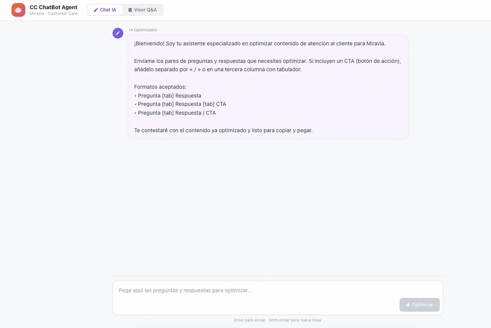
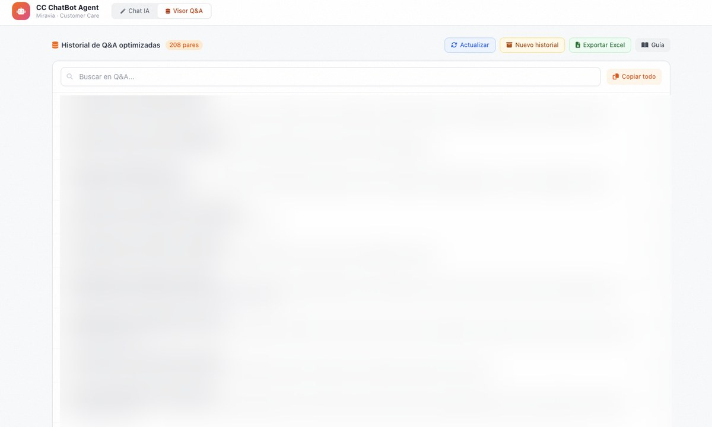
The Q&A viewer is blurred to protect internal Miravia data.
6. Before and after
The optimized answers use clear, step-by-step instructions in user-friendly language, for example: "1. Abre la app o entra en la web de Miravia. 2. Ve a 'Mi cuenta' y luego a 'Mis pedidos'..." (1. Open the app or go to the Miravia website. 2. Go to "My account" and then "My orders"...).
Before
After
Before
¿Qué es un parcel shop?
Un Parcel Shop es un punto de recogida donde la empresa de mensajería puede dejar tu pedido. Esto ocurre si tú lo seleccionas al hacer la compra o si no fue posible entregarlo directamente en tu domicilio.
After
¿Qué es un 'parcel shop'?
Un 'parcel shop' es un punto de recogida. Se trata de un establecimiento donde la empresa de mensajería puede dejar tu pedido si lo eliges al comprar o si falla la entrega a domicilio.
What changed
The key term, 'punto de recogida', is in bold so users spot it at a glance.
The foreign term is written in lowercase and single quotes, as the guidelines require.
Simpler wording: "si falla la entrega a domicilio" replaces "si no fue posible entregarlo directamente en tu domicilio".
Before
¿Que es un locker?
Los lockers son módulos o armarios automatizados ubicados en lugares estratégicos como centros comerciales, estaciones de servicio o calles principales. Te permiten recoger tu pedido de forma rápida y segura, sin necesidad de contacto y en el horario que mejor te convenga.
After
¿Qué es una taquilla ('locker')?
Son taquillas automatizadas situadas en lugares estratégicos (centros comerciales, gasolineras, etc.) que te permiten recoger tu pedido de forma rápida, segura y sin contacto, en el horario que prefieras.
What changed
The question leads with the Spanish term ("taquilla") and keeps 'locker' in parentheses, and the missing accent in "Qué" is fixed.
"Módulos o armarios automatizados" becomes "taquillas automatizadas", in bold.
Shorter and lighter, with the examples moved into parentheses.
Before
¿Cuánto tiempo estará mi pedido en el punto de recogida?
Tu pedido estará en el Punto de recogida por 7 días laborales. Si no recoges tu pedido dentro de ese plazo, será devuelto a la tienda.
After
¿Cuánto tiempo estará mi pedido en el punto de recogida?
Tu pedido estará disponible en el punto de recogida durante 7 días laborables. Si no lo recoges en ese plazo, se devolverá a la tienda y se tramitará tu reembolso.
What changed
"Laborales" becomes "laborables" and "Punto de recogida" loses its capital letters, following the language and terminology guides.
Bold now highlights the two things users look for: the deadline and the refund.
It also tells users what happens next: the refund is processed.
Before
Seleccioné a domicilio como método de entrega pero mi pedido llegó a un PUDO. No sé dónde recogerlo ya que yo no seleccioné el PUDO. ¿Qué puedo hacer?
Entendemos que esta situación puede ser frustrante. Esto suele ocurrir cuando nuestro socio logístico no pudo realizar la entrega en la dirección seleccionada originalmente. Para localizar el Punto de Recogida deberás comunicarte directamente con nuestro Socio Logístico.
After
Mi pedido ha sido entregado en un punto de recogida que no elegí, ¿qué hago?
Lamentamos esta situación. A veces, si la entrega a domicilio falla, la empresa de mensajería deja el paquete en un punto de recogida cercano. Para saber dónde está, contacta directamente con la empresa de mensajería.
What changed
Internal terms ("PUDO", "socio logístico") are replaced with the words users know: "punto de recogida" and "empresa de mensajería".
The question is shorter and written the way a user would say it.
The action users have to take ("contacta") is in bold and comes last.
Before
¿Cómo realizar un reembolso parcial?
Si necesitas devolver un artículo y pedir un reembolso parcial. Aquí te explicamos cómo hacerlo paso a paso, desde iniciar la solicitud hasta recibir una respuesta.
1. Entra a 'Mi perfil': Abre la app o web de Miravia y accede a tu perfil.
2. Accede a 'Mis pedidos': Busca la sección de 'Mis pedidos' para ver tus compras recientes.
3. Selecciona el pedido correspondiente: Asegúrate de que el pedido esté dentro de los 30 días posteriores a la entrega.
4. Haz clic en 'Devolver': Inicia el proceso de devolución desde la opción disponible.
5. Elige el motivo: Selecciona la razón de tu devolución.
• “Faltan partes o accesorios” o
• “He recibido menos de lo que pedí”.
6. Indica el importe que deseas solicitar como reembolso: Especifica la cantidad que deseas que te sea reembolsada.
7. Adjunta fotos claras del producto: Sube imágenes que respalden tu solicitud.
8. Revisión en 48 horas: La tienda revisará tu caso y responderá en un plazo máximo de 48 horas.
After
¿Cómo puedo solicitar un reembolso parcial?
1. Inicia sesión en tu cuenta de Miravia y ve a 'Mis pedidos'.
2. Selecciona el pedido correspondiente.
3. Pulsa 'Devolver'.
4. Selecciona el motivo ('Faltan partes o accesorios' o 'He recibido menos de lo que pedí').
5. Indica el importe que deseas solicitar como reembolso.
6. Adjunta fotos claras del artículo.
7. La tienda revisará tu caso y responderá en un plazo máximo de 48 horas.
What changed
Seven one-line steps instead of eight steps, each with a title and an explanation.
Every step is a single action written in the imperative, with UI options in single quotes.
The long introduction is removed: the steps speak for themselves.
Before
¿Cómo/dónde puedo encontrar el código ARN?
Sabemos lo importante que es poder hacer un seguimiento de tu reembolso, puedes seguir estos pasos para encontrar el código ARN
:
1. Accede a tu perfil en Miravia
2. Ve a la sección 'Mis pedidos'
3. Selecciona el pedido con reembolso confirmado
4. Busca la opción 'Reembolso confirmado' que podrás encontrar dentro de los detalles del pedido
5. En esa sección, podrás ver toda la información detallada. Una vez el reembolso esté procesado, podrás ver el número ARN y los datos del método al que se realizó el reembolso
After
¿Cómo puedo encontrar el código ARN?
1. Inicia sesión en tu cuenta de Miravia.
2. Ve a 'Mis pedidos'.
3. Selecciona el pedido con reembolso confirmado.
4. Pulsa 'Reembolso confirmado' en los detalles del pedido.
5. Verás el número ARN y los datos del método al que se realizó el reembolso.
What changed
The filler introduction and the stray ":" are removed, so the answer goes straight to the steps.
Consistent formatting: the steps are no longer partly in bold, and only the key result, "número ARN", is highlighted.
The question is simplified: "¿Cómo/dónde puedo…?" becomes "¿Cómo puedo…?".
7. Results
The chatbot's satisfaction rate increased from 37.61% in June to 47.88% in September, a rise of more than 10 percentage points. In addition, the customer care team now has an autonomous tool to keep improving and scaling the chatbot's content.
Chatbot satisfaction rate, June vs. September.
8. Key learnings
This project reinforced that content quality is a core part of the user experience, especially in a support channel where users are already frustrated. It also showed me how AI can scale content design work, as long as it is guided by clear guidelines and human judgment.
Audit before automating. Reviewing 208 Q&A pairs revealed patterns in tone, terminology and length that shaped every rule I wrote.
Iterate with real data. Each prompt version was tested against real answers, and every failure became a clear rule.
In support, clarity and empathy beat brand voice. Users are often frustrated; the best answers solve the problem fast and warmly.
AI scales content design, human judgment steers it. Content design defines what a good answer is; AI reproduces it at scale, and people keep reviewing edge cases.
Quality shows in the numbers. Satisfaction rate rose from 37.61% to 47.88% (+10.27 pp).
Trend Radar ("Radar de tendencias") is an editorial-style section in the Miravia app and website that gathers the fashion and beauty trends people are talking about each week, in the spirit of brands like Zara, Sklum or Create. Users reach it through a banner on the home page, and the section is organized into categories such as "Viral in Social Media", "New obsession", "Miravia's favs" and "Also trending".
This was an end-to-end team project. This case study gives a short overview of the whole process and then focuses on the part I owned: the banners, imagery and content that present each trend, and the TikTok account I created to bring users into the section.
2. The process, end to end
Each cycle, as a team, we:
Analyzed viral trends across social networks, using the previous week's data.
Wrote briefs for the products linked to each trend.
Reviewed every week whether products were still viral, to add, remove or keep them.
Created the banners and the section page.
Analyzed clicks and performance after launch.
Promoted the section on TikTok with short videos and carousels featuring each week's trending products, leading users back to the section in the app.
3. My role: banners, copy and trend imagery
The banner on the home page is the entry point to Trend Radar, so it had to communicate each week's trend at a glance. Every cycle, I designed the banner, the imagery and the microcopy for each trend in Figma, following the editorial, magazine-like direction of the section.
To keep the section recognizable week after week, I built a consistent visual system: a short headline that names the trend, a clear CTA, and, on product cards, a social-proof sticker (e.g., "+27K Posts") and benefit chips such as free and fast shipping.
For each trend, I explored several headline and layout options before settling on one. For the "XL bags" trend, for example, I tested angles like "because size does matter" and "more space for your life".
Every banner was produced in Spanish and English and also in different sizes to adapt to each platform and available space. I adapted rather than translated, keeping the tone and the benefit: "Descubre tu nueva obsesión" became "Find your next obsession", and "Lo que arrasa en redes" became "What's trending on social media".
English
Español
Product card with social proof
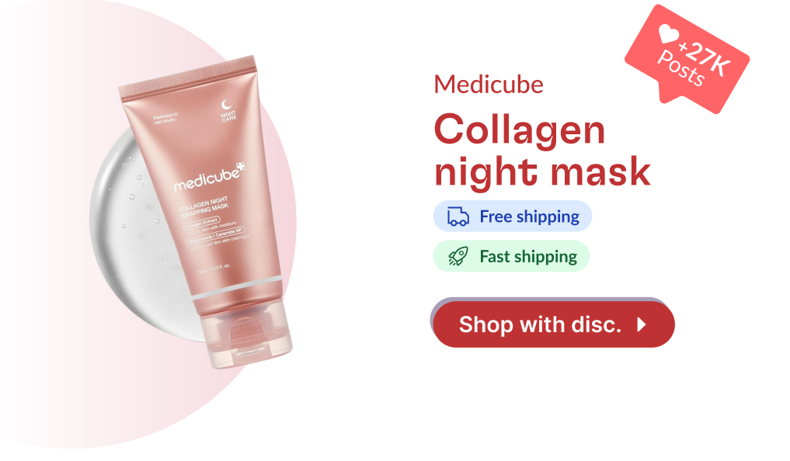
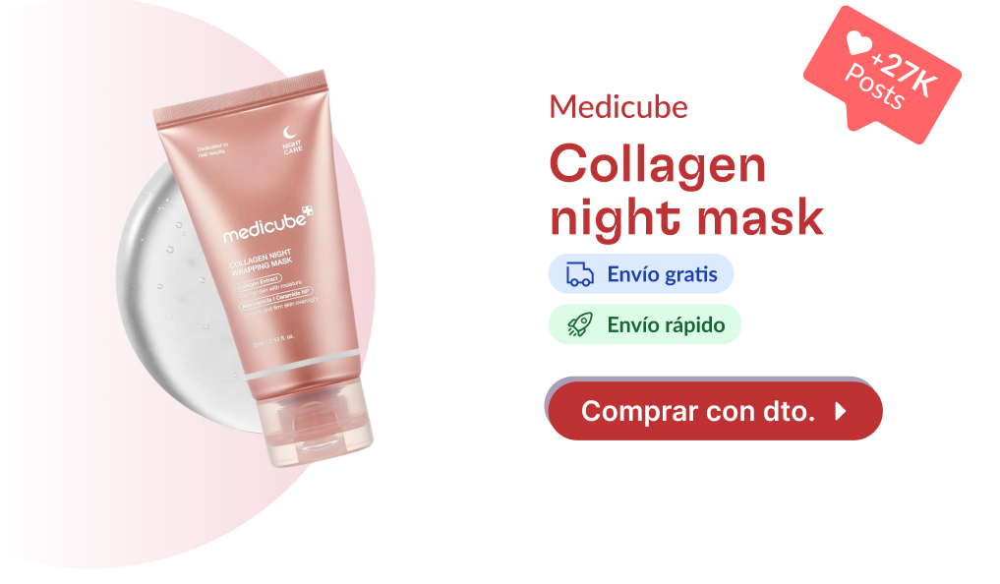
Message banner
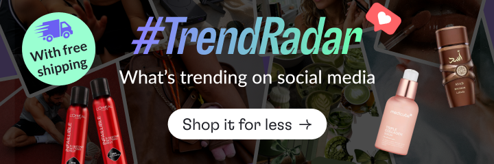
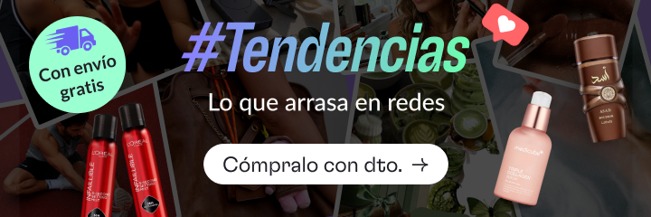
Search banner · PC
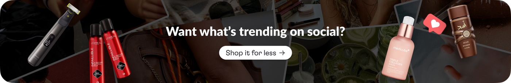
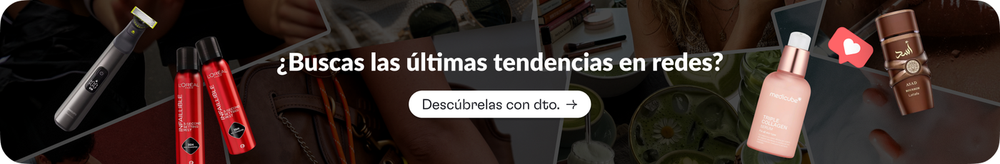
Search banner · App
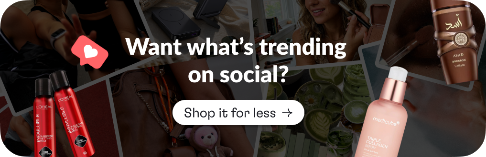
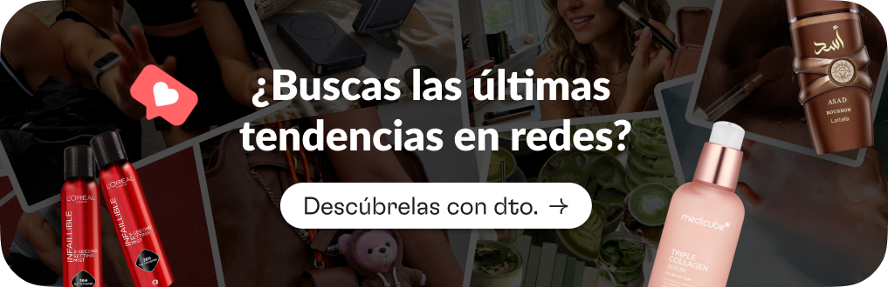
Click any image to enlarge it.
4. Miravia Trends on TikTok: a post-launch acquisition channel
Once the section was live, the challenge was getting people to it. I created and ran @miravia_trends, a TikTok account that turns each week's trends into short videos and carousels featuring products from the radar. We chose TikTok because it's where trends are seen and spread, and because it's where our audience already spends their time. Instead of asking users to come looking for trends, we showed them the trends in the place where they discover them, and led them back to the products in the app.
My workflow:
Trend and brief: I chose which products from the week's radar were relevant to show on social media.
Generation: first, I generated images with AI tools, like ChatGPT and Alibaba D-One (an internal one). I created the images using detailed prompts, specifying each person's appearance, the specific trending clothing or object, the pose, angles, size, lighting, and the type of camera for each image. Once I had the images, I generated short videos from each image using AI tools like Kling AI, Symphony and Alibaba D-One. I also generated these videos with specific prompts, detailing the movements of the people and the camera. Once I had a good quantity of short videos (usually 10-12), I edited the final video to be posted in CapCut and TikTok itself.
Editing: finally, I edited every piece in CapCut or TikTok's native tools (pacing, text, music, transitions) so it felt native to the platform and didn't look like raw AI output.
Publishing: I posted 5 times per week, aligned with the trends of that week.
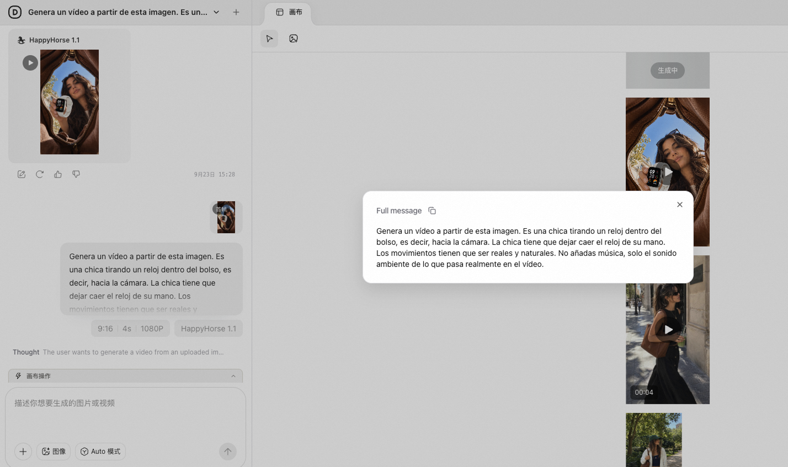
Alibaba D-One (internal tool): generating a short video from an image with a detailed prompt.
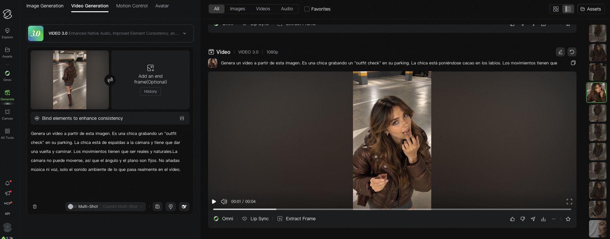
Kling AI: generating a video from a starting image, with a prompt that describes the movements of the person and the camera.
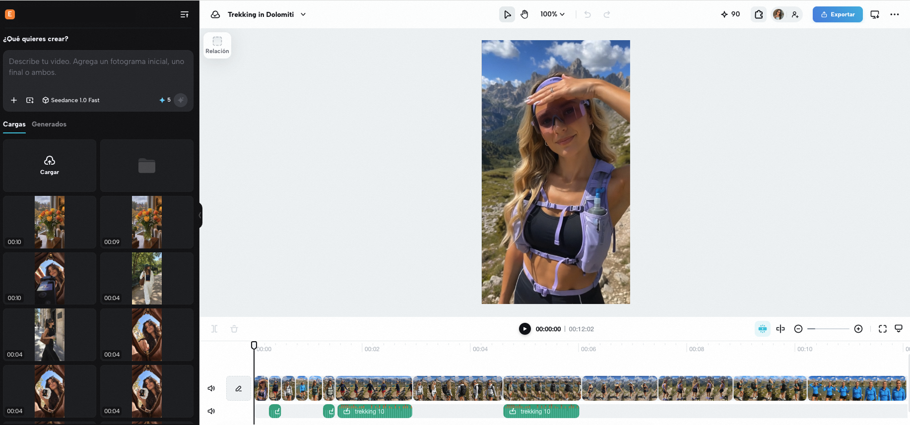
CapCut: editing the final video by assembling the generated clips on the timeline.
5. Selected work
This is the @miravia_trends profile, followed by six of the videos I'm most proud of. Each one turns a fashion, beauty or lifestyle trend from the radar into a short, scroll-friendly piece: generated with AI from an image, then edited so it feels native to TikTok rather than like raw AI output.
Açaí bowlAirport outfit checkReset SundayTrekking outfitsAutumn outfitsXL bag
6. Where it stands
The project was only two months old, so there is no growth data to share yet. What it shows is a complete, repeatable content pipeline, from weekly trend to published post, built from scratch.
7. Key learnings
Trend Radar taught me to see the whole internal process of launching a digital product. Because it was an end-to-end project, I was part of the ideation, the planning and the execution, which gave me a much clearer picture of how each phase connects to the next.
It was also a very interesting experience in teamwork: working together, dividing the tasks and relying on each other's part was a key piece of making the project move forward.
Finally, creating content for TikTok pushed me to grow my knowledge of prompting and AI. Turning a trend into consistent, natural-looking images and videos meant learning how to write detailed prompts and iterate on them, a skill I now use well beyond this project.
Ahead of the summer World Cup, Miravia launched "La Portería" ("Soccer Goal" / "A Baliza" in English and Portuguese), a football-themed minigame designed to boost engagement and reward users with points and coupons during the tournament. As Content Designer, I was responsible for the content across the entire experience: every screen in the game flow, the campaign banners, and the push/CRM notifications, localized into Spanish, English and Portuguese.
2. Game flow content
The core of the game is simple: users take penalty shots to score goals and earn points and coupons, with a limited number of daily attempts to keep them coming back. I wrote the content for the full flow — from the shooting screen copy ("¡GOOOOL!", attempt counters, CTAs like "Chutar" / "Shoot") to the reward pop-ups, where copy had to shift by prize type (seller coupon, category coupon, points, or the top-tier "legend" reward) while keeping the same energetic, celebratory tone throughout.
Here you can find some screens designed and localized in Spanish: the minigame home screen, the "¡GOOOL" scenario screen and also two pop-ups screens that appeared when the user got points as a prize.
3. Team Support: a World Cup-specific mechanic
To tie the game more directly to the tournament, I designed the content for a "Team Support" feature: on match days, users could pick Spain or the opposing team, and if their team won, they received an extra discount coupon the next day. This mechanic connected the everyday game loop to the real excitement of the World Cup calendar, giving users a reason to come back specifically on match days.
4. Campaign banners and localization
Beyond the game itself, I wrote the copy for the campaign page and the SRP (search results page) banners that drove traffic into the game, in Spanish, English and Portuguese. I wrote the content in Spanish first, as it's the primary language for Miravia's users, then adapted it into English myself. For Portuguese — spoken by part of our seller and user base — we rely on an internal AI agent trained to translate from Spanish and English, keeping the platform consistently localized across all three languages.
Homepage bannerPush notification
5. Push and CRM notifications
To keep users returning daily, I also wrote a series of push and CRM notifications in all three languages, designed to feel like natural nudges rather than generic reminders ("Your team did it!", "Ready for another shot?", "Don't miss it out!").
6. Results
The data confirms what the Team Support mechanic was designed to do: content that reacted to real match results drove engagement far beyond generic reminders. "Team win" push notifications — sent right after Spain won a match — reached click-through rates of up to 23.1%, compared to just 0.4%–0.6% for standard daily or expiry reminders. In other words, timely, event-driven content performed up to 40x better than routine notifications.
This translated directly into business impact: the game generated €125.6K in cumulative GMV over the campaign (an average of €4.1K in daily sales, across 2,905 orders and 2,675 buyers), with an average product click-through rate of 2.2%. Engagement was strong too — a 64.1% shot conversion rate and a 34.5% average Day 2 retention, meaning over a third of players came back the day after playing.
7. Key learnings
La Portería showed me how content design can turn a simple mechanic into something that feels timely and alive, by connecting it to a real-world event users already cared about. Writing across three languages and multiple touchpoints — game, banners, notifications — also reinforced the importance of a consistent voice that still adapts naturally to each language and format.
It also taught me how important Content Design (UX Writing) is to connect fiction with reality. La Portería is a game, a fictional world with a goalkeeper mascot, penalty shots and prizes, but it only worked because its content kept pulling that world into the real one: the match days, the team users supported, the coupons they could actually spend on Miravia. Content was the bridge that made both worlds feel like one.
Finally, the data showed that when people feel part of something, they participate far more, and that also translates into good conversion results. Letting users pick their team and react to real match results made them feel involved in the tournament, which is why those notifications reached up to 23.1% click-through rate and why the game ended up driving €125.6K in GMV.